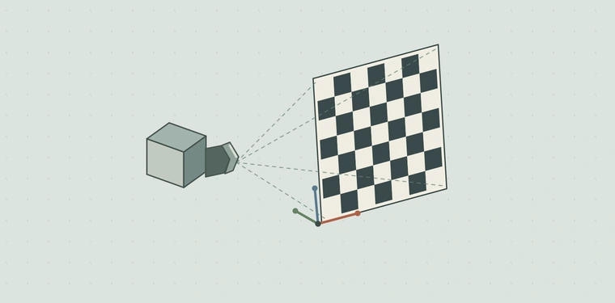

把安装误差和时间偏移分开
机器人一动，原本贴着图像轮廓的投影就可能错开。Coding_Skills 的点云复核笔记把时钟、内外参和坐标系都列作检查项。对相机和 IMU 来说，安装姿态会改变两个传感器看到的运动方向，时差则会让它们记录同一动作的时刻错开。
相机观测标定板角点，IMU 记录角速度和比力。将两者刚性固定后，它们之间的旋转和平移保持不变。相机与 IMU 的联合标定利用这一约束来估计外参，也可以估计两路数据的固定时差。
Kalibr 需要相机模型与内参、IMU 噪声参数、标定板几何，以及同时采集的图像和惯性数据。采集时让标定板固定，移动和转动整套传感器。回放中要能看清角点，陀螺仪的多个轴上都应有运动，时间戳也应连续。
平移列和八毫秒
T_cam_imu 把 IMU 坐标变到相机坐标。代入 IMU 原点 (0, 0, 0)，结果就是变换矩阵的平移列，也就是 IMU 原点在相机系的位置。若旋转为单位阵、平移为 (0.04, 0, 0) 米，这个原点位于相机 x 轴正向 4 厘米处。
timeshift_cam_imu 的单位是秒，Kalibr 的约定为 t_imu = t_cam + shift。图像时刻 10.000 秒，偏移 +0.008 秒，对应的 IMU 时刻就是 10.008 秒。把这组数代进配置读取代码，正负号用反了就能当场发现。
再录一段转向
留出一段没参加标定的转向，用估计的时差对齐两条时间轴。由相邻标定板观测估计相机角速度，统一姿态方向，把角速度标在两帧时间的中点。再用外参旋转将陀螺仪角速度换到相机系，两条曲线便可以逐轴对照。
如果每次转向峰都提前相似的时长，回查偏移换算和设备时钟。峰时刻能对上、某个轴的符号或幅值却异常，则先核对旋转方向与轴定义。这项对照主要检验时差与旋转。平移还得结合多方向运动、标定报告中的残差以及多次采集结果判断。